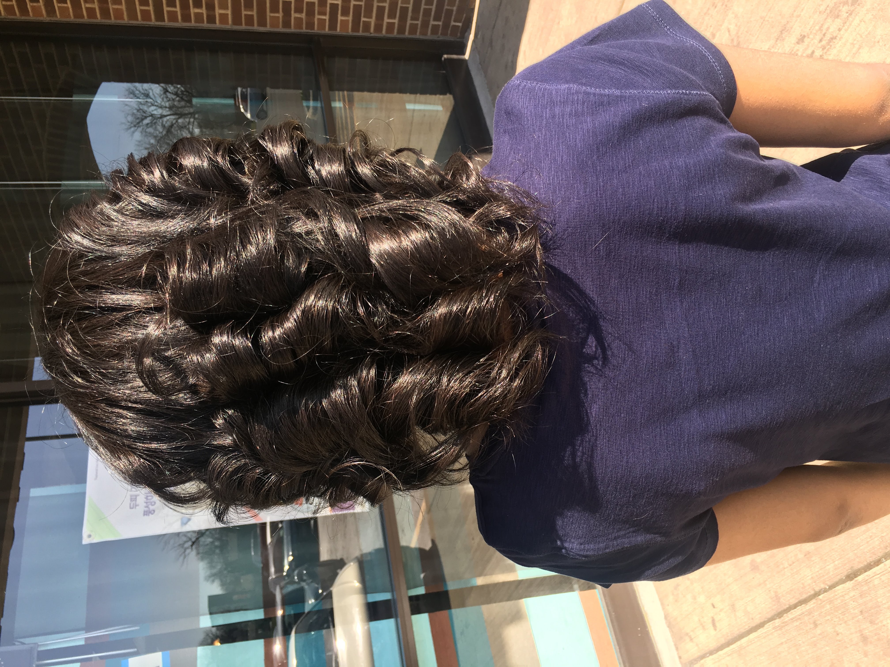
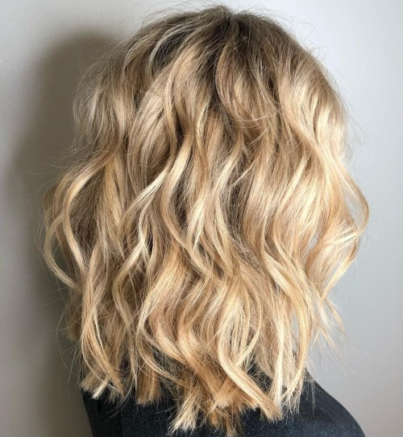

| Curly | Wavy | |
|---|---|---|
|  |  | |
so, tbh straight and wavy hair is much easier to handle then curly or coily hair. Props to you women for putting so much effort and work into your hair.
To get the look that I have you will need just a couple of products but a whole lot of patience. To maintain your hair you should definitely use pantene click here. but
I would also recommend living proof click here.. They have really good shampoo and conditioners that keep your hair healthy. Also you should use hair masks that will make
your even more healthier click here.
So let's get to the actual point. To get this type of hair again you need patience. It does take quite a while.
1) you should begin by spraying your hair with heat protectant so that your hair doesn't end up getting damaged.
2) part your hair through the middle or section it off into three parts whichever one is more easier for you.
3) heat your straighter up so that it's ready to use.
4) once your hair is parted and sprayed, you are now ready to begin.
5) take a 1 inch section of your hair.
6) take the straightner and pull it down and then twist it away from your scalp.
7) make sure to pull away not towards your scalp because then the curl won't be the way you want it to.
8) you can also use a curler if you find it eaier. for short hair use a straighter and long hair use a curler.
9) now you can also alternate the way that you curl your hair. this means you can switch from left to right between sections so that the curls don't become one big wave.
10) continue this onto all sections until you are happy with the way they look.
11) lastly finger comb your hair a bit(this is optional) and hairspray your curls so they last all day!
here's a link to see a youtube tutorial on how to achieve this look click here.